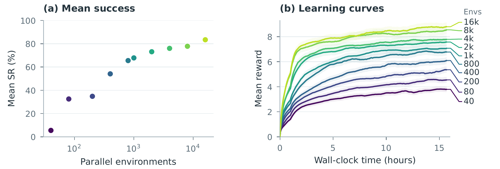
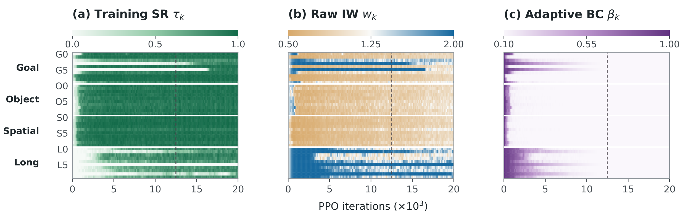

Give lagging tasks
more weight.
IW increases the PPO loss weight for tasks below the current multi-task success mean. Rollout allocation stays fixed; the learning signal changes.
Balances learning across tasksMT-Libero / GPU-parallel robot learning
A GPU-parallel framework for heterogeneous multi-task reinforcement learning.
MT-Libero brings LIBERO’s scenes, assets, and success predicates into one GPU-parallel simulator, renderer, rollout buffer, and learner.
A common interface supports state and visual policies. Randomized initial states test how reliably the policy solves each of the 40 known tasks.
PARALLEL ENVIRONMENT SCALING
Increasing parallel replicas improves endpoint success within the shared training-time budget in this experiment.

Sequences of interactions.
Variation in manipulated objects.
Different spatial relationships.
Different goals in shared scenes.
Demonstration-Guided Policy Optimization provides a common training stack for controlled comparisons of how demonstrations enter learning.
MT-Libero defines the benchmark. DGPO supplies the reference training framework. IW-ABC is the selected recipe within it.
PPO adds no learner-specific demonstration interface. It still uses the shared demonstration-start resets, tracking reward, and privileged critic above.
Offline behavior cloning initializes the actor from demonstration state–action pairs. Online PPO then takes over, with the BC objective switched off.
Adds a negative log-likelihood (NLL) loss on offline demonstration state–action pairs to the PPO loss. Its weight λ decays with the policy-update index.
The reverse phase moves reset states backward along demonstrations as success improves. The forward phase expands coverage to all recorded demonstration starts; policy updates remain on-policy PPO.
Adds a mean squared error (MSE) loss between the live policy mean and the time-aligned demonstration action to the PPO loss. Its weight β adapts to task success and training progress, balancing teacher guidance with self-exploration.
Demo → initial policy
PPO loss + λ · NLL
Reverse resets → forward coverage
PPO loss + β · MSE
Each entry adds to the same shared DGPO stack.
IW increases the PPO loss weight for tasks below the current multi-task success mean. Rollout allocation stays fixed; the learning signal changes.
Balances learning across tasksABC uses each task’s success and elapsed training to regulate teacher guidance, balancing imitation with the policy’s own exploration and reward-driven improvement.
Balances teacher guidance and PPOAs demonstration guidance relaxes, IW continues giving lagging tasks more weight. These training dynamics show how the two mechanisms work together in visual IW-ABC.

IW-ABC improves both mean and long-horizon success within the shared DGPO stack. The visual recipe covers 38 of 40 tasks at ≥80% success.
90.1%
Mean success
0.32M actor parameters93.5%
Mean success
0.40M trainable actor parameters| Learner | Mean SR ↑ | Long SR ↑ | Coverage ↑ |
|---|---|---|---|
| PPO | 50.8 ± 0.1 | 10.0 ± 0.0 | 20 / 40 |
| BC → PPO | 47.5 ± 0.1 | 20.0 ± 0.0 | 18 / 40 |
| ABC | 75.5 ± 0.2 | 40.0 ± 0.0 | 29 / 40 |
| IW-PPO | 44.9 ± 0.1 | 20.0 ± 0.0 | 18 / 40 |
| IW-DAPG | 68.5 ± 0.0 | 30.0 ± 0.0 | 27 / 40 |
| IW-RFCL | 66.4 ± 0.2 | 30.0 ± 0.0 | 26 / 40 |
| IW-ABC | 90.1 ± 0.1 | 70.0 ± 0.0 | 35 / 40 |
| Visual IW-ABC | 93.5 ± 0.1 | 87.9 ± 0.2 | 38 / 40 |
Success rates are percentages. Final checkpoints after 30,000 PPO iterations; 50 demonstrations per task; three randomized-reset evaluation seeds. Coverage counts tasks with ≥80% success. These are known-task evaluations under randomized initial states.
BEYOND THE SIMULATOR
02 / DEPLOY WITH FIXED WEIGHTS
A separate state-input policy is jointly trained on four RoboTwin Piper tasks, using 50 demonstrations per task. It transfers to the physical Piper without weight updates.
The physical interface supplies task identity and robot, object, and target states in the simulation observation format.
Representative physical rollouts, shown at the supplied recording speed. Success counts summarize the full 20-trial evaluation per task.
Anonymous repositories for code, simulation assets, and demonstrations.